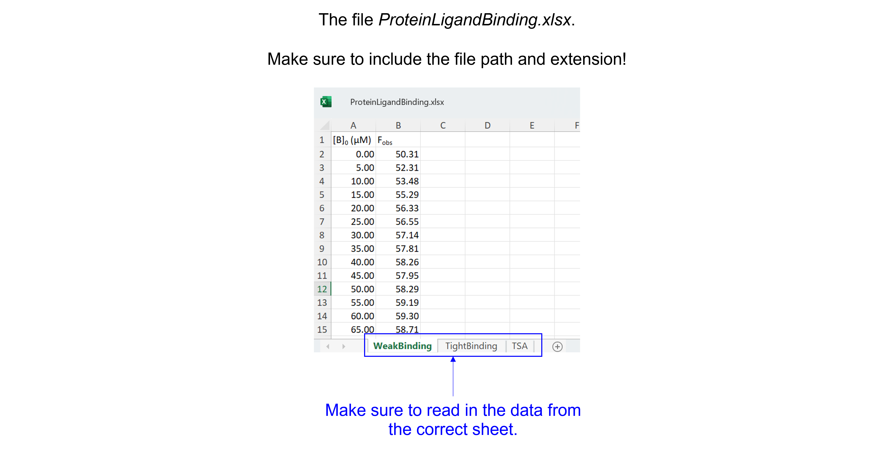
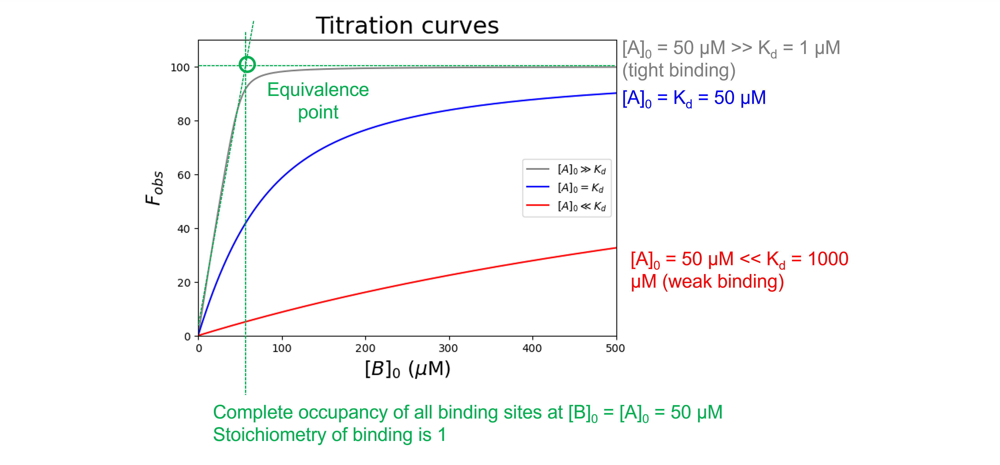

Protein-ligand binding#
Introduction#
In the following simple mechanism, \(A\) is the protein, \(B\) the ligand, and \(AB\) the protein-ligand complex:
Where \(k_{+1}\) (in \(\mu\)\(M^{-1}\) \(s^{-1}\)) and \(k_{−1}\) (in \(s^{-1}\)) are rate constants for the forward and reverse reactions between \(A\) and \(B\).
In this notebook, we will determine the equilibrium binding constant, \(K_d = \frac{[A]_{eq}[B]_{eq}}{[AB]_{eq}}\) (in \(M\)) in different conditions:
Weak binding: \([A]_0 \ll K_d\) and \([B]_0 \gg [A]_0\)
Tight binding: \([A]_0 > K_d\)
We will also investigate how to study protein-ligand binding using thermal shift assay data.
Convention#
We will use the convention that \([A]\) is the concentration of free \(A\), \([A]_0\) is the initial (or total) concentration of \(A\) before any binding or conversion occurs, and \([A]_{eq}\) is the concentration of \(A\) at equilibrium.
\(K_d\)#
The \(K_d\) reports the extent of binding that occurs between two biomolecules, e.g. a protein \(A\) and a ligand \(B\). Using the \(K_d\), \([B]_0\), and \([A]_0\) we can estimate how much protein-ligand complex \(AB\) is formed. It is important to realize that the amount of complex formation does not depend on excess of \([B]_0\) over \([A]_0\), but on how much \([B]_0\) exceeds the \(K_d\)!
The \(K_d\) is a measurement of affinity between two molecules. A low \(K_d\) value indicates that the two molecules have a high affinity for each other: a low concentration of the ligand is needed to saturate the protein. A high \(K_d\) value indicates that the two molecules have a low affinity for each other: a high concentration of the ligand is needed to saturate the protein.
Experimental design#
Several methods exist to quantitatively measure binding affinity, including
fluorescence intensity
fluorescence anisotropy or fluorescence polarization
isothermal titration calorimetry (ITC)
optical biosensors
chemical shift perturbation (CSP) experiments in solution nuclear magnetic resonance (NMR) spectroscopy
electrophoretic mobility shift assay (EMSA)
thermal shift assay (TSA) or differential scanning fluorimetry (DSF)
…
For all methods:
we perform a titration of one binding partner (= the titrant, usually the ligand \(B\)) against a constant concentration of the other binding partner (= the analyte, usually the protein \(A\)). In the titration, \([A]_0\) is fixed and increasing amounts of \([B]_0\) are added and the formation of \([AB]_{eq}\) is followed via e.g. a change in fluorescence intensity.
we plot our experimental values as a function of titrant concentration
we fit the data to an appropriate equilibrium binding equation
Data#
Get the data needed for this exercise here.
The spreadsheet “ProteinLigandBinding.xlsx” contains three sheets (see figure below), make sure to read in the correct sheet.
{kind=link}
Weak binding conditions#
Background#
We are provided with data which describe the fluorescence from component \(A\) (at 0.5 \(\mu\)\(M\), \([A]_0 \ll K_d\)) on addition of a large excess of component \(B\) (\([B]_0 \gg [A]_0\)), which is non-fluorescent. A schematic (based on a published phosphate biosensor by Brune et al, see here) is shown below.
{kind=link}
The increase in fluorescence indicates that a complex is formed between \(A\) and \(B\):
Such data allow calculation of the equilibrium dissociation constant, \(K_d\). Because \(B\) is in large excess (> 5 \(\mu\)\(M\)), the amount which is bound to \(A\) is very small and can be neglected. This means that \([B] = [B]_0 - [AB] \sim [B]_0\) at all times throughout the titration. If the stoichiometry is 1:1, the equilibrium dissociation constant, \(K_d\) is
Rearranging gives
which is the equation of a hyperbola.
In this titration we do not measure \([A]_{eq}\) and \([AB]_{eq}\) directly, but assume the fluorescence value provides a proportional measure of concentration. Let’s call \(F_{obs}\) the observed fluorescence for a particular value of \([B]_0\) and \(F_{min}\) and \(F_{max}\) the fluorescence values observed at the start and end of the titration, respectively. At the start of the titration, when \([B]_0 = 0, [AB]_{eq} = 0\), the start fluorescence (\(F_{min}\)) corresponds to \([A]_{eq} = [A]_0\). When \([A]_0 \ll K_d\) and \([B]_0 \gg [A]_0\), at the end of the titration, all the original \(A\) is bound to \(B\) and \([A]_{eq} \sim 0\) so that the end fluorescence (\(F_{max}\)) corresponds to \([AB]_{eq} \sim [A]_0\). We can write this as
Using \([A]_{eq} = [A]_0 - [AB]_{eq}\) and rearranging gives
where the term \(F_{max} - F_{min}\) is the amplitude of the fluorescence change. Combining with the hyperbola equation above gives
Importing the libraries#
#Import the libraries
import numpy as np
import matplotlib.pyplot as plt
import pandas as pd
from scipy.optimize import curve_fit
Reading and plotting the data#
#Read the Excel file
dfWB = pd.read_excel ('../data/ProteinLigandBinding.xlsx', #create a pandas DataFrame from the filename with file path and extension shown
sheet_name=0, #use the first sheet
header=0) #our data has column names
print(dfWB) #print the DataFrame created
[B]0 (µM) Fobs
0 0 50.309803
1 5 52.311181
2 10 53.483983
3 15 55.288104
4 20 56.325422
5 25 56.552537
6 30 57.144985
7 35 57.813831
8 40 58.260262
9 45 57.947102
10 50 58.289883
11 55 59.189086
12 60 59.297183
13 65 58.707448
14 70 59.406282
15 75 59.806176
16 80 59.360657
17 85 60.091209
18 90 60.297371
19 95 60.123426
20 100 60.303981
21 105 60.118759
22 110 60.483033
23 115 60.754384
24 120 60.522774
25 125 60.770736
26 130 60.450432
27 135 60.183150
28 140 60.287399
29 145 61.124269
30 150 60.950916
31 155 60.717647
32 160 60.439923
33 165 60.602280
Let’s have a look at the relationship between \([B]_0\) and \(F_{obs}\). We are going to plot \(F_{obs}\) against \([B]_0\).
#Plot the data
plt.figure(figsize=(7,5)) #start a figure object
plt.plot(dfWB['[B]0 (µM)'], dfWB['Fobs'], #plot a set of x (= [B]0), y (= Fobs) data points
'o', color='gray', markersize=8, linestyle='None') #use a round, gray marker with size 8; use no line
plt.title('Fluorescence titration', fontsize=22) #title of graph
plt.xlabel('$[B]_0$ ($\\mu$M)', fontsize=18) #X-axis label
plt.ylabel('$F_{obs}$', fontsize=18) #Y-axis label
plt.axis([0, 170, 50, 62]) #axis boundaries, in this case from 0 to 170 for the X-axis and 50 to 62 for the Y-axis
plt.show() #show the figure object
Fitting and reporting the data: \(K_d\) and the signal change#
We first specify a parametrized model function (using def) to explain our data. The function takes as input 1 independent variable (\(x = [B]_0\)) and 3 parameters (\(F_{min}\), \(F_{max}\), and \(K_d\)):
We then use the curve_fit command from SciPy to use non-linear least squares to fit our function to our data. The target function is the first argument, the independent variable the second argument, the dependent variable the third argument and the start values for the parameters the fourth argument. To find an initial guess for the parameters:
Look at the plotted fluorescence data and estimate the values of \(F_{min}\) (i.e. start fluorescence) and \(F_{max}\) (i.e. the end fluorescence).
Estimate the equilibrium dissociation constant \(K_d\) from the concentration of \([B]_0\) which gives about 50% of the change in fluorescence.
{kind=link}
The function returns the optimal values for the parameters and the covariance matrix. This covariance matrix can be used to calculate standard errors for the fit parameters.
#Define the protein-ligand binding function (weak binding)
def funcWeakBinding(x, Fmin, Fmax, Kd):
return Fmin + (Fmax - Fmin) * ((x) / (Kd + x))
#Create a list of substrate concentrations as input for the function
Bin=np.linspace(0, 200, 100)
#Test the initial guesses for the fitting parameters
plt.figure(figsize=(7,5)) #start a figure object
plt.plot(dfWB['[B]0 (µM)'], dfWB['Fobs'], #plot a set of x (= [B]0), y (= Fobs) data points
'o', color='gray', markersize=8, linestyle='None', #use a round, gray marker with size 8; use no line
label='Data') #add a legend label
plt.plot(Bin, funcWeakBinding(Bin, 50, 61, 20), #Test my guesses for the initial parameters. Use the generated [B]0 array between 0 and 200 as x-values.
color="red", linestyle='solid', #use red, solid line
label='Guesses') #add a legend label
plt.title('Fluorescence titration', fontsize=22) #title of graph
plt.xlabel('$[B]_0$ ($\\mu$M)', fontsize=18) #X-axis label
plt.ylabel('$F_{obs}$', fontsize=18) #Y-axis label
plt.axis([0, 170, 50, 62]) #axis boundaries, in this case from 0 to 170 for the X-axis and 50 to 62 for the Y-axis
plt.legend() #add a legend
plt.show() #show the figure object
#Fit the data with the weak binding curve
paramsWB, params_covarianceWB = curve_fit(funcWeakBinding, #the function we try to fit to the data
dfWB['[B]0 (µM)'], #the x values
dfWB['Fobs'], #the y values
[50, 61, 20]) #my guesses for the initial parameters
#Report the fitted Kd parameter with standard error
print("Kd = ", paramsWB[2], "±", np.sqrt(np.diag(params_covarianceWB))[2])
Kd = 21.700795101327582 ± 1.6910805977378534
The fitted \(K_d\) is 22 \(\pm\) 2 \(\mu\)\(M\). Now plot the resulting curve on the data and check the residuals to see if the fitting procedure worked well.
#Calculate the residuals
resid = dfWB['Fobs'] - funcWeakBinding(dfWB['[B]0 (µM)'], *paramsWB) #calculate the residuals, the star in *paramsWB unpacks the array so the optimized parameter values become the arguments (after the x-values) to the function
#Produce a combined graph
fig = plt.figure() #to create a figure object
xlimits = [0, 170] #to make sure we use the same of the X-axis boundaries for both plots
ax1 = fig.add_axes([0.1, 0.53, 1, 0.81]) #to specify the coordinates, width and height of the top plot
ax2 = fig.add_axes([0.1, 0.1, 1, 0.4]) #to specify the coordinates, width and height of the bottom plot
ax1.plot(dfWB['[B]0 (µM)'], dfWB['Fobs'], #plot a set of x (= [B]0), y (= Fobs) data points
marker='o', color='gray', markersize=8, linestyle='None', #use a round, gray marker with size 8; use no line
label='Data') #add a legend label
ax1.plot(Bin, funcWeakBinding(Bin, *paramsWB), #Add the fitted line to plot. Use the generated [B]0 array between 0 and 200 as x-values. Use the fitted parameters to calculate the y-values. The star in *paramsWB unpacks the array so the optimized parameter values become the arguments (after the x-values) to the function.
color="gray", linestyle='-', #use a gray, solid line
label='Fit') #add a legend label
ax1.axis(xlimits + [50, 62]) #sets the X-axis and Y-axis boundaries for the top plot
ax1.tick_params(axis='x', bottom=False, labelbottom=False) #removes the ticks and tick labels on the X-axis for the top plot
ax1.set_ylabel('$F_{obs}$') #adds Y-axis title for the top plot
ax1.legend(loc='lower right') #include legend
ax2.plot(dfWB['[B]0 (µM)'], resid, #plot a set of x (= [B]0), y (= the residuals) data points
marker='o', color='gray', linestyle='None', markersize=8) #use gray datapoints size 8 and no line
ax2.axhline(0, color='gray', linestyle="--") #adds a horizontal line at y=0
ax2.axis(xlimits + [-1, 1]) #sets the X-axis and Y-axis boundaries (needs some trial and error to find the right ones!) for the bottom plot
ax2.set_xlabel('$[B]_0$ ($\\mu$M)') #adds X-axis title for the bottom plot, which is the same for the top plot
ax2.set_ylabel('Residuals') #adds Y-axis title for the bottom plot
plt.show() #show the figure object
That looks good! Let’s now calculate the signal change.
Exercise 86
Calculate the % change in fluorescence based on the fitted values of \(F_{max}\) and \(F_{min}\):
Solution to Exercise 86
#Define a function to calculate the change in fluorescence based on the minimum and maximum fluorescence
def fluochange(fmax, fmin):
return ((fmax - fmin) / fmin) * 100
#Calculate the change in fluorescence using the minimum and maximum fluorescence from the fit
print(fluochange(pWramsTB[1], pWramsTB[0]))
The % change in fluorescence is 24% (increase!).
Tight binding conditions#
Background#
We are provided with data which describe the fluorescence from component \(A\) (at 50 \(\mu\)\(M\), \([A]_0 > K_d\)) on addition of component \(B\). Upon complex formation, we see a decrease in flurescence intensity (i.e. fluorescence quenching).
Since the starting \([A]_0\) value is high, a significant amount of \(B\) is bound to form \(AB\) in the early stages of the titration. As a consequence we cannot assume that \([B] \sim [B]_0\). Thus
Rearranging this equation gives a quadratic equation of the form \(ax^2 + bx + c = 0\):
Using the quadratic formula \(x = \frac{- b ± \sqrt{b^2 - 4ac}}{2a}\), we can solve this equation (there is only one physically meaningful solution):
Importing the libraries#
#Import the libraries
import numpy as np
import matplotlib.pyplot as plt
import pandas as pd
from scipy.optimize import curve_fit
Reading and plotting the data#
#Read the Excel file
dfTB = pd.read_excel ('../data/ProteinLigandBinding.xlsx', #create a pandas DataFrame from the filename with file path and extension shown
sheet_name=1, #use the second sheet
header=0) #our data has column names
print(dfTB) #print the DataFrame created
[B]0 (µM) Fobs
0 0 101.281302
1 5 95.546574
2 10 91.905610
3 15 90.282790
4 20 86.508129
5 25 81.503169
6 30 81.923274
7 35 77.492044
8 40 77.296115
9 45 70.331629
10 50 68.978942
11 55 69.103311
12 60 66.267461
13 65 68.373290
14 70 64.928612
15 75 66.796101
16 80 67.250607
17 85 63.991490
18 90 62.293365
19 95 64.068544
20 100 61.697222
21 105 64.684667
22 110 64.637277
23 115 62.298640
24 120 63.763304
25 125 60.691164
26 130 60.303286
27 135 60.034654
28 140 64.196008
29 145 61.231373
30 150 60.467756
31 155 64.271165
32 160 59.671584
33 165 59.371298
Let’s have a look at the relationship between \([B]_0\) and \(F_{obs}\). We are going to plot \(F_{obs}\) against \([B]_0\).
#Plot the data
plt.figure(figsize=(7,5)) #start a figure object
plt.plot(dfTB['[B]0 (µM)'], dfTB['Fobs'], #plot a set of x (= [B]0), y (= Fobs) data points
'o', color='gray', markersize=8, linestyle='None') #use a round, gray marker with size 8; use no line
plt.title('Fluorescence titration', fontsize=22) #title of graph
plt.xlabel('$[B]_0$ ($\\mu$M)', fontsize=18) #X-axis label
plt.ylabel('$F_{obs}$', fontsize=18) #Y-axis label
plt.axis([0, 170, 55, 105]) #axis boundaries, in this case from 0 to 170 for the X-axis and 55 to 105 for the Y-axis
plt.show() #show the figure object
Fitting and reporting the data: \(K_d\), signal change and stoichiometry#
We fit the data using the function:
with our independent variable \(x = [B]_0\) and 3 parameters \(F_{min}\), \(F_{max}\), and \(K_d\). We need to specify \([A]_0\) outside the function so it can be used within the function.
To find an initial guess for the parameters:
Look at the plotted fluorescence data and estimate the values of \(F_{min}\) (i.e. start fluorescence) and \(F_{max}\) (i.e. the end fluorescence).
Estimate the equilibrium dissociation constant \(K_d\) from the concentration of \([B]_0\) which gives about 50% of the change in fluorescence.
#Set the concentration of [A]0
A0 = 50
#Define the protein-ligand binding function (tight binding)
def funcTightBinding(x, Fmin, Fmax, Kd):
return Fmin + (Fmax - Fmin) * (((Kd + A0 + x) - ((Kd + A0 + x)**2 - 4 * A0 * x )**(1/2)) / (2 * A0))
#Create a list of substrate concentrations as input for the function
Bin=np.linspace(0, 200, 100)
#Test the initial guesses for the fitting parameters
plt.figure(figsize=(7,5)) #start a figure object
plt.plot(dfTB['[B]0 (µM)'], dfTB['Fobs'], #plot a set of x (= [B]0), y (= Fobs) data points
'o', color='gray', markersize=8, linestyle='None', #use a round, gray marker with size 8; use no line
label='Data') #add a legend label
plt.plot(Bin, funcTightBinding(Bin, 102, 55, 30), #Test my guesses for the initial parameters. Use the generated [B]0 array between 0 and 200 as x-values.
color="red", linestyle='solid', #use red, solid line
label='Guesses') #add a legend label
plt.title('Fluorescence titration', fontsize=22) #title of graph
plt.xlabel('$[B]_0$ ($\\mu$M)', fontsize=18) #X-axis label
plt.ylabel('$F_{obs}$', fontsize=18) #Y-axis label
plt.axis([0, 170, 55, 105]) #axis boundaries, in this case from 0 to 170 for the X-axis and 55 to 105 for the Y-axis
plt.legend() #add a legend
plt.show() #show the figure object
#Fit the data with the weak binding curve
paramsTB, params_covarianceTB = curve_fit(funcTightBinding, #the function we try to fit to the data
dfTB['[B]0 (µM)'], #the x values
dfTB['Fobs'], #the y values
[102, 55, 30]) #my guesses for the initial parameters
#Report the fitted Kd parameter with standard error
print("Kd = ", paramsTB[2], "±", np.sqrt(np.diag(params_covarianceTB))[2])
Kd = 5.47180159867898 ± 1.3218122693165213
The fitted \(K_d\) is 5 \(\pm\) 1 \(\mu\)\(M\). There is a large error on the fitted constant!
Note that the \(K_d\) is now considerably less than \([A]_0\) confirming this is a tight binding case. A hyperbolic fit would be a poor approximation.
Now plot the resulting curve on the data and check the residuals to see if the fitting procedure worked well.
#Calculate the residuals
resid = dfTB['Fobs'] - funcTightBinding(dfTB['[B]0 (µM)'], *paramsTB) #calculate the residuals, the star in *paramsTB unpacks the array so the optimized parameter values become the arguments (after the x-values) to the function
#Produce a combined graph
fig = plt.figure() #to create a figure object
xlimits = [0, 170] #to make sure we use the same of the X-axis boundaries for both plots
ax1 = fig.add_axes([0.1, 0.53, 1, 0.81]) #to specify the coordinates, width and height of the top plot
ax2 = fig.add_axes([0.1, 0.1, 1, 0.4]) #to specify the coordinates, width and height of the bottom plot
ax1.plot(dfTB['[B]0 (µM)'], dfTB['Fobs'], #plot a set of x (= [B]0), y (= Fobs) data points
marker='o', color='gray', markersize=8, linestyle='None', #use a round, gray marker with size 8; use no line
label='Data') #add a legend label
ax1.plot(Bin, funcTightBinding(Bin, *paramsTB), #Add the fitted line to plot. Use the generated [B]0 array between 0 and 200 as x-values. Use the fitted parameters to calculate the y-values. The star in *paramsTB unpacks the array so the optimized parameter values become the arguments (after the x-values) to the function.
color="gray", linestyle='-', #use a gray, solid line
label='Fit') #add a legend label
ax1.axis(xlimits + [55, 105]) #sets the X-axis and Y-axis boundaries for the top plot
ax1.tick_params(axis='x', bottom=False, labelbottom=False) #removes the ticks and tick labels on the X-axis for the top plot
ax1.set_ylabel('$F_{obs}$') #adds Y-axis title for the top plot
ax1.legend(loc='lower right') #include legend
ax2.plot(dfTB['[B]0 (µM)'], resid, #plot a set of x (= [B]0), y (= the residuals) data points
marker='o', color='gray', linestyle='None', markersize=8) #use gray datapoints size 8 and no line
ax2.axhline(0, color='gray', linestyle="--") #adds a horizontal line at y=0
ax2.axis(xlimits + [-5, 5]) #sets the X-axis and Y-axis boundaries (needs some trial and error to find the right ones!) for the bottom plot
ax2.set_xlabel('$[B]_0$ ($\\mu$M)') #adds X-axis title for the bottom plot, which is the same for the top plot
ax2.set_ylabel('Residuals') #adds Y-axis title for the bottom plot
plt.show() #show the figure object
That looks good! Let’s now calculate the signal change.
Exercise 87
Calculate the % change in fluorescence based on the fitted values of \(F_{max}\) and \(F_{min}\).
Solution to Exercise 87
#Define a function to calculate the change in fluorescence based on the minimum and maximum fluorescence
def fluochange(fmax, fmin):
return ((fmax - fmin) / fmin) * 100
#Calculate the change in fluorescence using the minimum and maximum fluorescence from the fit
print(fluochange(paramsTB[1], paramsTB[0]))
The %change in fluorescence is -41% (decrease!).
Let’s dive deeper into the topic: experimental design#
\([A]_0\)#
Depending on the value of \(K_d\) relative to \([A]_0\), the shape of a binding curve will vary from two straight lines which intersect at the equivalence point in which the amount of \(B\) added is just enough to completely neutralize \(A\) (for high affinity, small \(K_d\) case) to a curve that is practically hyperbolic (for low affinity, large \(K_d\) case).
We can use the function we wrote in “Tight binding conditions” to illustrate this:
#Set the concentration of [A]0
A0 = 50
#Define the protein-ligand binding function (tight binding)
def funcTightBinding(x, Fmin, Fmax, Kd):
return Fmin + (Fmax - Fmin) * (((Kd + A0 + x) - ((Kd + A0 + x)**2 - 4 * A0 * x )**(1/2)) / (2 * A0))
To create a list of \([B]_0\) concentrations, we use the np.linspace(start, stop, num) command which returns num evenly spaced samples, calculated over the start-stop interval.
#Create a list of ligand concentrations as input for the function
xinput = np.linspace(0, 500, 501)
Let’s plot three curves: one with \([A]_0\) (50 \(\mu\)\(M\)) \(\gg\) \(K_d\) (1 \(\mu\)\(M\)), one with \([A]_0\) (50 \(\mu\)\(M\)) \(\ll\) \(K_d\) (1 \(mM\)) \(K_d\), and one with \([A]_0\) (50 \(\mu\)\(M\)) = \(K_d\) (50 \(\mu\)\(M\)). The other parameters are \(F_{min} = 0\), and \(F_{max} = 100\).
#Plot to compare the conditions
plt.figure(figsize=(7,5))
plt.plot(xinput, funcTightBinding(xinput, 0, 100, 1), color='gray', label='$[A]_0 \\gg K_d$')
plt.plot(xinput, funcTightBinding(xinput, 0, 100, 50), color='blue', label='$[A]_0 = K_d$')
plt.plot(xinput, funcTightBinding(xinput, 0, 100, 1000), color='red', label='$[A]_0 \\ll K_d$')
plt.title('Titration curves', fontsize=22)
plt.legend(loc='center right')
plt.xlabel('$[B]_0$ ($\\mu$M)', fontsize=18)
plt.ylabel('$F_{obs}$', fontsize=18)
plt.axis([0, 500, 0, 110])
plt.show()
The gray curve (\([A]_0 \gg K_d\)) clearly shows a sharp bend at the equivalence point and the stoichiometry could be determined accurately for tight binding complexes. The blue and red curves (\([A]_0\) \(\leqslant\) \(K_d\)) look more hyperbolic and the stoichiometry is difficult to determine accurately. Indeed, when \(K_d\) > \(10[A]_0\), a quadratic equation often fails to converge to a unique fit and it is necessary to use the simpler hyperbolic approximation. The ideal titration is when \(K_d = \frac{[A]_0}{10}\) for which \(K_d\) and the stoichiometry can be determined with reasonable accuracy. Obviously the \(K_d\) is not known initially, but the experiment can be repeated with the appropriate \([A]_0\) concentration once an approximate \(K_d\) has been determined.
{kind=link}
\([B]_0\)#
The quality of the estimate of \(K_d\) depends on covering a ligand concentration range that spans a significant portion of the binding isotherm. As a rule of thumb, we aim for a \([B]_{0}\) range from \(0.05 K_d\) to \(20 K_d\). We also need to get high data-density in the region of a binding curve that is most important for precise and accurate curve-fitting, i.e. around the \(K_d\).
Experimentally, a convenient method for choosing ligand concentrations is to first make a stock solution of ligand at the highest concentration that is experimentally reasonable. Then, two-fold serial dilutions can be made from this stock to produce a range of lower ligand concentrations.
For example, let us say that the highest concentration of ligand to be used in the reaction is 200 \(\mu\)\(M\). We could make a 2.0 \(mM\) stock solution of the ligand that would be diluted 10-fold into the final assay reaction mixture (i.e., to give a final concentration of 200 \(\mu\)\(M\)). We could then take a portion of this stock solution and dilute it with an equal volume of buffer to yield a 1.0 \(mM\) solution, which upon 10-fold dilution into the assay reaction mixture would give a final ligand concentration of 100 \(\mu\)\(M\). A portion of this solution could also be diluted in half with buffer, and so on, to yield a series of solutions of diminishing ligand concentrations. The final ligand concentrations of such a 2-fold serial dilution scheme are… Let us write a function for that!ng
#Define the dilution function
def FoldDilution(conchigh, conclow, df): #highest concentration and lowest concentration you want
i = conchigh #start with the highest concentration
TwoFoldDilution = [] #create an empty list
while ((i<=conchigh) and (i>=conclow)): #when i (which is either the highest concentration you provided or the newly calculated value) is below the highest concentration and above the lowest concentration you provided
TwoFoldDilution.append(i) #i will be added to the list
i = i/df #and a "new" i will be calculated, which will be evaluated
return TwoFoldDilution #return the list with calculated concentrations
Let’s see which values it returns for 200.0 \(\mu\)\(M\) as highest concentration and around 0.1 \(\mu\)\(M\) as lowest concentration in the assay reaction mixture.
Ligand1 = FoldDilution(200.0, 0.1, 2) #we get a list of concentrations that follow a two-fold dilution starting from 200 𝜇M and ending around 0.1 𝜇M
print(Ligand1)
[200.0, 100.0, 50.0, 25.0, 12.5, 6.25, 3.125, 1.5625, 0.78125, 0.390625, 0.1953125]
That looks good!
Let us now calculate and plot \([AB]_{eq}\) (in \(\mu\)\(M\)) against these ligand concentrations \([B]_0\) (in \(\mu\)\(M\)). We can use the function we wrote in “Tight binding conditions” to illustrate this:
Let’s use \([A]_0\) (0.2 \(\mu\)\(M\)) \(\ll\) \(K_d\) (10 \(\mu\)\(M\)). The other parameters are \(F_{min} = 0\), and \(F_{max} = 100\). Let us add uniform noise to the simulated data using the random.uniform command from NumPy.
#Set the concentration of [A]0
A0 = 0.2
#Define the protein-ligand binding function (tight binding)
def funcTightBinding(x, Fmin, Fmax, Kd):
return Fmin + (Fmax - Fmin) * (((Kd + A0 + x) - ((Kd + A0 + x)**2 - 4 * A0 * x )**(1/2)) / (2 * A0))
#Create data with random noise
Exp1 = funcTightBinding(np.array(Ligand1), 0, 100, 10) #we need to convert the list of numbers to a numpy array to use as an input for the mathematical function
Exp1Noise = Exp1 + np.random.uniform(size=Exp1.shape) #with added random noise
#Plot to check
plt.figure(figsize=(7,5))
plt.plot(Ligand1, Exp1Noise, 'o-', color='gray', label='$[A]_0$ (0.2 $\\mu$$M$) $\\ll$ $K_d$ (10 $\\mu$$M$)')
plt.title('Titration curves', fontsize=22)
plt.legend(loc='center right')
plt.xlabel('$[B]_0$ ($\\mu$M)', fontsize=18)
plt.ylabel('$F_{obs}$', fontsize=18)
plt.axis([0, 250, 0, 110])
plt.show()
Exercise 88
To demonstrate the importance of a good range of ligand concentrations to determine \(K_d\), try to fit the data generated above using non-linear least-squares fitting for
\([B]_{0}\) ranging from 200.0 \(\mu\)\(M\) to 0.2 \(\mu\)\(M\) (all 11 data points)
\([B]_{0}\) ranging from 1.6 \(\mu\)\(M\) to 0.2 \(\mu\)\(M\) (the last 4 data point)
\([B]_{0}\) ranging from 200.0 \(\mu\)\(M\) to 25.0 \(\mu\)\(M\) (the first 4 data points)
Solution to Exercise 88
#Calculate fitted parameters using a range of data points
paramsALL, params_covarianceALL = curve_fit(funcTightBinding, Ligand1, Exp1Noise, [0,100,10])
print("Kd using all data points = ", paramsALL[2], "±", np.sqrt(np.diag(params_covarianceALL))[2])
paramsLAST4, params_covarianceLAST4 = curve_fit(funcTightBinding, Ligand1[-4:], Exp1Noise[-4:], [0,100,10], maxfev = 1000)
print("Kd using 1.6 to 0.2 microM = ", paramsLAST4[2], "±", np.sqrt(np.diag(params_covarianceLAST4))[2])
paramsFIRST4, params_covarianceFIRST4 = curve_fit(funcTightBinding, Ligand1[:4], Exp1Noise[:4], [0,100,10], maxfev = 1000)
print("Kd using 200.0 to 25.0 microM = ", paramsFIRST4[2], "±", np.sqrt(np.diag(params_covarianceFIRST4))[2Using all data points, we get a $K_d$ = 10.0 ± 0.1 $\mu$$M$, in excellent agreement with the true value of this constant.
If measurements are made only at low substrate concentrations, we get a $K_d$ = 277 ± 21870 $\mu$$M$. In this concentration range, we never reach saturation, and graphically, $F_{max}$ appears to be infinite.
If measurements are made only at high substrate concentrations, we get a $K_d$ = 8 ± 2 $\mu$$M$. We do not have enough data points in the region of a binding curve that is most important for precise and accurate curve-fitting, _i.e._ around the $K_d$.rease!).
Binding affinities using the Thermal Shift Assay#
When one performs the Thermal Shift Assay (TSA) in the presence of increasing concentrations of ligand, one will (usually) see a shift in the midpoint of the unfolding transition (i.e. the melting temperature, \(T_m\)) as the ligand interacts with and (typically) stabilizes the protein. Remember from the “Thermal shift assay” example, that the \(T_m\) can be determined using curve-fitting via:
where \(m_n\) and \(m_u\) account for changes in the signals of the pre- and post-transition regions with changes in temperature and \(Y_{n'}\) and \(Y_{u'}\) are the signal of the native and unfolded states. \(T\) is the temperature, \(T_m\) is the midpoint of the thermal unfolding curve, \(\Delta H_m\) is the enthalpy change for protein unfolding at \(T_m\) and \(\Delta C_p\) is the change in heat capacity.
Titration curves for TSA experiments are sometimes presented by showing the \(T_m\) as a function of ligand concentration. However, we cannot simply fit these curves using the weak- or tight-binding equations we have seen earlier. These equations are only applicable when the observable is linearly proportional to the fraction of one of the species. \(T_m\) is not such a variable as it also represents protein unfolding! In addition, the binding affinity, \(K_d\) cannot be assumed constant at different temperatures.
So, we need to take into account the folding - unfolding reaction and the protein - ligand binding reaction: \(U\) (unfolded protein) \(+ L\) (ligand) \(\rightleftharpoons F\) (folded protein) \(+ L \rightleftharpoons FL\) (folded portein - ligand complex). \(K_U\) is the equilibrium constant for the protein unfolding reaction, and \(K_d\) is the equilibrium constant for the dissociation reaction. Both \(K_U\) and \(K_d\) depend on temperature, but both are constant at fixed temperature (and buffer conditions).
The 2019 paper from Bai and co-workers, available here, describes an isothermal strategy to analyse TSA data. Rather than analysing \(T_m\) as a function of ligand concentration, they select a single temperature of interest, and at this temperature evaluate the fraction of protein that is folded / unfolded at each ligand concentration. Because all of the data used correspond to the same temperature, no thermodynamic parameters are required.
Their deviation leads to the following equation:
with
\([L]_0\) and \([P]_0\) are known experimental parameters; \(K_U\) and \(K_d\) can be fit at the same time, or alternatively, \(K_U\) can first be determined at the temperature of interest from the thermal unfolding curve in the absence of ligand (see the Tutorial “Determining the free energy of unfolding of proteins in Python”).
Below, I included the equation and applied it to some experimental data. If you are interested, Bai and co-workers wrote a free and easy-to-use Python program implementing their isothermal approach for fitting an simulating data (including simulated thermal unfolding curves!). The code is available here.
Let us first import the data. Of note, \([P]_0\) is 1 \(\mu\)M.
#Read the Excel file
dfTSA = pd.read_excel ('../data/ProteinLigandBinding.xlsx', #create a pandas DataFrame from the filename with file path and extension shown
sheet_name=2, #use the second sheet
header=0) #our data has column names
print(dfTSA) #print the DataFrame created
[L]0 (µM) fu Unnamed: 2 [P]0 = 1 µM
0 0.15 0.49 NaN NaN
1 0.30 0.46 NaN NaN
2 0.60 0.43 NaN NaN
3 0.90 0.39 NaN NaN
4 1.20 0.36 NaN NaN
5 1.50 0.32 NaN NaN
6 2.00 0.30 NaN NaN
7 2.50 0.27 NaN NaN
8 3.00 0.24 NaN NaN
9 5.00 0.18 NaN NaN
10 7.00 0.13 NaN NaN
11 13.00 0.08 NaN NaN
12 30.00 0.04 NaN NaN
13 150.00 0.01 NaN NaN
We can now plot the data. Let’s plot \(f_u\) versus versus the logarithm of the free ligand concentration, \([L]_0\).
#Plot the data
plt.figure(figsize=(7,5)) #start a figure object
plt.plot(dfTSA['[L]0 (µM)'], dfTSA['fu'], #plot a set of x (= [L]0), y (= fu) data points
'o', color='gray', markersize=8, linestyle='None') #use a round, gray marker with size 8; use no line
plt.xscale("log") #use a logarithmic scale for the X-axis
plt.title('TSA: Titration Curve', fontsize=22) #title of graph
plt.xlabel('$[L]_0$ ($\\mu$M)', fontsize=18) #X-axis label
plt.ylabel('$f_{u}$', fontsize=18) #Y-axis label
plt.axis([0.1, 200, 0, 1]) #axis boundaries, in this case from 0.1 to 200 for the X-axis and 0 to 1 for the Y-axis
plt.show() #show the figure object
We now define the function and try out some initial guesses for \(K_u\), and \(K_d\).
Look at the plotted data to find an initial guess for the parameters:
Use the \(f_u\) value at zero ligand concentration to estimate \(K_u\) using $\( K_u = \frac{[U]_{eq}}{[N]_{eq}} = \frac{f_u}{f_n} = \frac{f_u}{1 - f_u} . \)$
Estimate the equilibrium dissociation constant \(K_d\) from the concentration of \([L]_0\) which gives about 50% of the change in \(f_u\).
See how the protein concentration \([P]_0\) is one of the parameters for the function. This is to include uncertainties for the protein concentration during the fit. Yet, we will use bounds during fitting that will force this parameter to be searched within custom boundaries. We remove bounds for the other parameters with (-)np.inf.
#Define the function
def calculate_fitted_isothermal_point(ligand_conc, Ku, Kd, protein_conc):
Kd = abs(Kd)
Ku = abs(Ku)
b = protein_conc + Kd*(1+Ku) - ligand_conc
c = -1.0 * ligand_conc * Kd * (1+Ku)
L_free = (-b+np.sqrt(b*b-4*c))/2
fit_fraction_unfolded = 1 / (1 + (1/Ku)*(1+L_free/Kd))
return fit_fraction_unfolded
#Create a list of substrate concentrations as input for the function
Bin=np.linspace(0, 150, 1000)
#Test the initial guesses for the fitting parameters
plt.figure(figsize=(7,5)) #start a figure object
plt.plot(dfTSA['[L]0 (µM)'], dfTSA['fu'], 'o', color='gray', markersize=8) #plot a set of x (= [L]0), y (= fu) data points
plt.plot(Bin, calculate_fitted_isothermal_point(Bin, 1, 2, 1), color="red",label='Guess') #Test my guesses for the initial parameters. Use the generated [B]0 array between 0 and 150 as x-values.
plt.xscale("log") #use a logarithmic scale for the X-axis
plt.title('TSA: Titration Curve', fontsize=22) #title of graph
plt.xlabel('$[L]_0$ ($\\mu$M)', fontsize=18) #X-axis label
plt.ylabel('$f_{u}$', fontsize=18) #Y-axis label
plt.axis([0.1, 200, 0, 1]) #axis boundaries, in this case from 0.1 to 200 for the X-axis and 0 to 1 for the Y-axis
plt.show() #show the figure object
#Fit the data with the curve
paramsTSA, params_covarianceTSA = curve_fit(calculate_fitted_isothermal_point, dfTSA['[L]0 (µM)'],dfTSA['fu'],
[2, 2, 1], bounds=((-np.inf,-np.inf,0.95), (np.inf,np.inf,1.05)))
#Report the fitted parameters with standard error
print("Ku = ", paramsTSA[0], "±", np.sqrt(np.diag(params_covarianceTSA))[0])
print("Kd = ", paramsTSA[1], "±", np.sqrt(np.diag(params_covarianceTSA))[1])
Ku = 1.0346673472477854 ± 0.023627867848768445
Kd = 1.1065639771448268 ± 0.06298727759934804
#Calculate the residuals
resid = dfTSA['fu'] - funcTightBinding(dfTSA['[L]0 (µM)'], *paramsTSA) #calculate the residuals, the star in *paramsTB unpacks the array so the optimized parameter values become the arguments (after the x-values) to the function
#Produce a combined graph
fig = plt.figure() #to create a figure object
xlimits = [0.1, 200] #to make sure we use the same of the X-axis boundaries for both plots
ax1 = fig.add_axes([0.1, 0.53, 1, 0.81]) #to specify the coordinates, width and height of the top plot
ax2 = fig.add_axes([0.1, 0.1, 1, 0.4]) #to specify the coordinates, width and height of the bottom plot
ax1.plot(dfTSA['[L]0 (µM)'], dfTSA['fu'], #plot a set of x (= [L]0), y (= fu) data points
marker='o', color='gray', markersize=8, linestyle='None', #use a round, gray marker with size 8; use no line
label='Data') #add a legend label
ax1.plot(Bin, calculate_fitted_isothermal_point(Bin, *paramsTSA), #Add the fitted line to plot. Use the generated [L]0 array between 0 and 150 as x-values. Use the fitted parameters to calculate the y-values. The star in *paramsTSA unpacks the array so the optimized parameter values become the arguments (after the x-values) to the function.
color="gray", linestyle='-', #use a gray, solid line
label='Fit') #add a legend label
ax1.axis(xlimits + [0, 1]) #sets the X-axis and Y-axis boundaries for the top plot
ax1.set_xscale("log") #use a logarithmic scale for the X-axis
ax1.tick_params(axis='x', bottom=False, labelbottom=False) #removes the ticks and tick labels on the X-axis for the top plot
ax1.set_ylabel('$f_u$') #adds Y-axis title for the top plot
ax1.legend(loc='best') #include legend
ax2.plot(dfTSA['[L]0 (µM)'], resid, #plot a set of x (= [B]0), y (= the residuals) data points
marker='o', color='gray', linestyle='None', markersize=8) #use gray datapoints size 8 and no line
ax2.axhline(0, color='gray', linestyle="--") #adds a horizontal line at y=0
ax2.axis(xlimits + [-2, 2]) #sets the X-axis and Y-axis boundaries (needs some trial and error to find the right ones!) for the bottom plot
ax2.set_xscale("log") #use a logarithmic scale for the X-axis
ax2.set_xlabel('$[L]_0$ ($\\mu$M)') #adds X-axis title for the bottom plot, which is the same for the top plot
ax2.set_ylabel('Residuals') #adds Y-axis title for the bottom plot
plt.show() #show the figure object

References#
Bai, N., Roder, H., Dickson, A. and Karanicolas, J. Isothermal Analysis of ThermoFluor Data can readily provide Quantitative Binding Affinities. Sci Rep 9, 2650 (2019).
Brune, M., Hunter, J.L., Corrie, J.E.T., and Webb, M.R. Direct, real-time measurement of rapid inorganic phosphate release using a novel fluorescent probe and its application to actomyosin subfragment 1 ATPase. Biochemistry 33, 8262-8271 (1994).